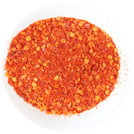

香辛料図鑑
カテゴリ
お知らせ
サイトについて
中華料理で使われている香辛料
干七星椒
皮が薄く仲がしっかりした唐辛子
干海椒
水分が少なく保存に適した唐辛子
干朝天椒
3つの中では一番辛い唐辛子

海椒面
一味唐辛子
干花椒
太陽光で干した山椒の実
青花椒
陰干した山椒の実
花椒面
花椒を砕いた粉
草果
ショウガ科の植物の一種
三奈
ショウガ科のバンウコンの根茎
茴香
ウイキョウ（フェンネル）の実を干したもの
陳皮
みかんの皮を乾燥させたもの
肉豆蔻
ナツメグを乾燥させたもの
甘草
甘草の根茎部分を干したもの
八角
唐樒（トウシキミ）の実を乾燥させたもの
白蔻
カルダモンの実を乾燥させたもの
老蔻
カルダモンの実の一種
桂枝
クスノキ科ケイの若枝を乾燥したもの
梔枝
くちなしの実を乾燥したもの